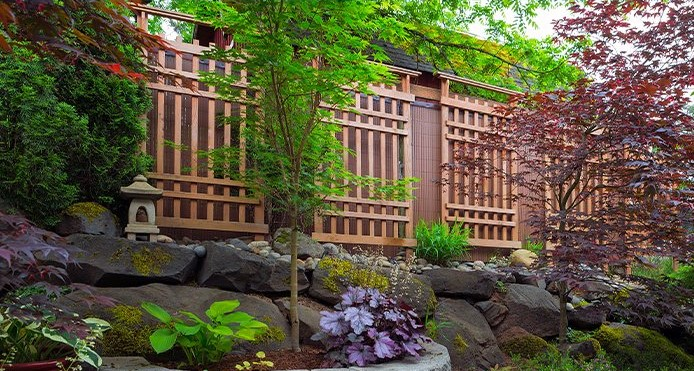
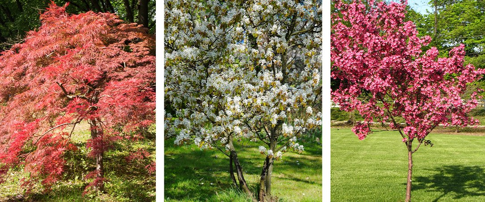
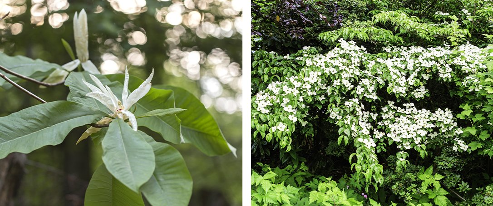

Mala Drveća Za Hladovinu: Vaše Najbolje Opcije Za Male Prostore
Volite ona drveća koja u proleće svuda u cvetaju, ali vaše dvorište je potpuno u senci i okruženo velikim drvećem. Dakle, možete li dodati malo šareno drvo? Definitivno možeš. Nekoliko vrsta drveća će se dobro ponašati na senovitim mestima sa puno drugih stabala u blizini.
Prvo, morate odrediti količinu senke koju vaše dvorište dobija tokom dana. Razlikuje se od dvorišta do dvorišta i od sezone do sezone, na osnovu ugla sunca i položaja drveća i zgrada.
Većina dvorišta ima oblasti koje imaju senku u delu dana, a sunce u drugim delovima dana. Ako lokacija na kojoj želite drvo ima pola dana sunca ili više, onda će drveće koje je voli sunce imati najbolje rezultate. Ako se na tom mestu sunce samo mali deo dana, ili ga uopšte nema, smatra se mestom u punoj senci.
Evo nekoliko malih stabala koja će najbolje funkcionisati na lokacijama koje su veći deo dana u senci i dovoljno su izdržljive da prežive naše zime.
Japanski javori Ova stabla su odlična za zasjenjena mjesta, a mnoga imaju listove divnih boja koje mogu doneti novi život senovitom mestu, variraju u veličinama, ali većina ostaje ispod 7.5-9m visoka i 4.5-6m široka. Postoji čak i nekoliko varijanti kao što su nitasti japanski javorovi koji ostaju visoki 1.5m i široki 3m. Patuljasti Japanski Javor je takođe minijaturna verzija, koja je visoka samo oko 1.8m i široka 1.8m. Mnoga od ovih stabala imaju dodatni bonus apsolutno zadivljujuće jesenje boje.
Divlja Mušmula Ovo su sjajna stabla ako tražite prilično belo cvetanje na zasenčenim mestima. Ovo drvo je poreklom iz šumskih predela i srećno je u delimičnom suncu do delimičnog senke, ali će takođe rasti na punom suncu. Bobice koje ovo drvo proizvodi su jestive i odličnog ukusa. Prave odlične džemove i sirupe! Jesenja Mušmula je prelepa sorta koja naraste od oko 6m u visinu do 6m u širinu i ima dodatni bonus prelepih listova narandže u jesen.
Judino drvo Ovo drvo je porijeklom iz Ajove i obično raste na rubovima šume. Osećaju se kao kod kuće na delimičnom suncu i delimično u senci. Ovo drveće ima zapanjujuće tamno ružičasto cveće koje ispunjava grane u proleće pre nego što lišće izbije. Judino drvo može narasti do oko 7.5m visine i 6m širine. Veliki, srcoliki listovi ovog drveta su atraktivni tokom sezone, a žute u jesen. Postoje plačljive varijante ovog drveta, kao što je Lavender Tvist, koje ostaju unutar 3m ili manje i imaju jedinstvenu naviku rasta.
Kišobran MagnolijaOve magnolije ovde nisu uobičajene, ali su dovoljno izdržljive da uspevaju čak na severu! Jedno od impresivnijih stabala na ovoj listi, kišobran magnolija je jedna od retkih magnolija koje mogu da rastu u punoj senci! Jedna od najboljih karakteristika ovog drveta su njegovi ogromni listovi tropskog izgleda; mogu da narastu do 90cm dugačke i da liče na kišobran. Cvetovi su prelepo upadljivi, veličine do 25cm u prelepoj kremasto beloj nijansi. Drvo sazreva do 7.5-9m visine i 4.5m širine.
Kousa cvetajući dren Ovo su kineski hibridi domaćeg cvetnog drena. Ove cvetaju mnogo kasnije od drugih drenova, a cvetovi su nešto manji. Kousa je takođe otpornija sorta, što ih čini pogodnim za sve krajeve. Cvetovi su obično beli ili ružičasti, a listovi u jesen postaju prelepi tamnocrveni. Ova stabla dostižu oko 4.8m visine i 3.9m širine.